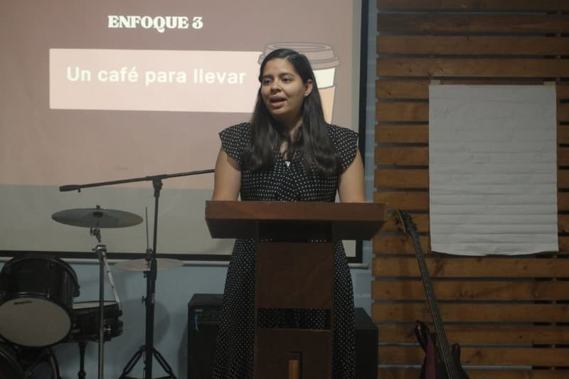
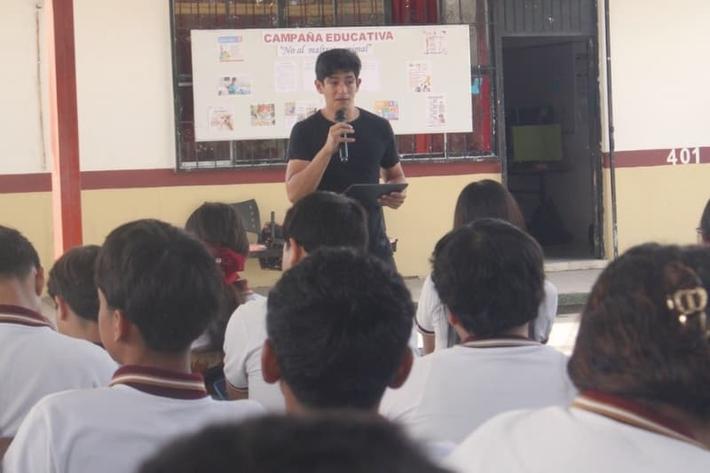

Hola amigos y familia, durante los meses de mayo y junio hemos visto una vez más la fidelidad de Dios en cada paso de la aventura. Al mirar atrás, nuestro corazón se llena de gratitud por todo lo que el Señor nos ha permitido aprender, servir y vivir durante esta temporada en México.Si quieres conocer más sobre quiénes somos y cómo comenzó esta aventura, te invitamos a leerlo.
Culminando una etapa de formación
En mayo terminamos oficialmente la parte académica del Instituto Bíblico Palabra de Vida. Fue un mes lleno de emociones encontradas. Por un lado, celebramos con alegría el cierre de una etapa que ha marcado profundamente nuestras vidas; por otro, comenzamos a sentir la cercanía de las despedidas y el final de una temporada muy especial.
Estamos agradecidos por todo lo aprendido dentro y fuera del aula. Dios ha usado Su Palabra, nuestros maestros, compañeros y cada experiencia vivida para moldear nuestro carácter y prepararnos para servirle mejor.
Aunque finalizamos nuestros estudios formales, sabemos que el aprendizaje no termina aquí. Seguimos comprometidos a crecer, prepararnos y caminar con humildad mientras servimos al Señor en los próximos desafíos que Él tiene para nosotros.


Sirviendo en Tamaulipas
Durante junio participamos en nuestro último viaje de UME, esta vez en Tamaulipas. Fue una experiencia muy especial que nos permitió compartir con líderes, iglesias, amigos y hermanos que hemos conocido a lo largo de estos años en México.
Agradecemos a Dios por las oportunidades de servicio, por las conversaciones significativas y por el ejemplo de tantas personas que sirven fielmente en esa región. Ver su compromiso y amor por la obra del Señor nos desafió y animó profundamente. Además, descubrimos que el clima de Tamaulipas fue una buena preparación para nuestro regreso a El Salvador, ya que el calor y la humedad nos hicieron sentir un poco más cerca de casa.
Una fecha para agradecer
Queremos compartir con ustedes una noticia que nos llena de alegría: el próximo 20 de agosto estaremos regresando a El Salvador para comenzar esta nueva etapa de servicio junto a Palabra de Vida El Salvador y continuar apoyando a nuestra iglesia local, a la cual amamos profundamente.
Reconocemos la mano de Dios en cada detalle de este proceso. Él ha provisto de maneras concretas y nos permitió adquirir los boletos para nuestro regreso, confirmándonos una vez más que sigue guiando y sosteniendo nuestro caminar.
Caminar juntos en la misión
Mientras nos preparamos para esta transición, recordamos una verdad que ha acompañado toda nuestra formación: la misión no se vive solos.
Dios ha usado a personas, familias e iglesias para sostenernos en oración, ánimo y apoyo práctico durante estos años. Gracias a esa compañía hemos podido estudiar, servir y prepararnos para esta nueva etapa ministerial.
Si deseas acompañarnos de una manera más constante, te invitamos a conocer nuestra página "Caminar Juntos en la Misión", donde compartimos cómo el apoyo mensual nos permite servir de tiempo completo y continuar desarrollando el ministerio al que Dios nos ha llamado.
Acompañar la misiónGracias por tomarte el tiempo de leer y caminar con nosotros. Nos encantaría saber de ti; no dudes en escribirnos. Será un gusto orar por ti y tu familia.
Nuestra Agenda de Aventura Compartida
- Por el tiempo de campamento en México, donde estaremos sirviendo en el área de Producción y apoyando las noches de apertura y las noches de arte.
- Por los jóvenes y colaboradores que estarán sirviendo junto a nosotros durante el campamento.
- Por salud y cuidado para nuestras familias y para nosotros.
- Por nuestro regreso a El Salvador el próximo 20 de agosto.
- Por provisión para esta nueva etapa de servicio ministerial.
¡Continúa la aventura!
¿Quieres orar por nosotros o compartir algo?
Estamos aquí para escucharte. Escríbenos y cuéntanos cómo podemos orar por ti también.
Conecta con nosotros